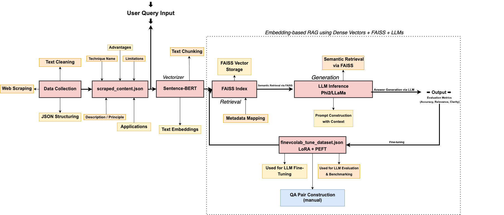

LLM Chatbot System Architecture
Visual Overview of Retrieval-Augmented Generation (RAG) Workflow

This diagram illustrates the full LLM-powered chatbot pipeline using semantic search (FAISS), inference, fine-tuning,
and evaluation stages. It is built on the RAG framework, combining structured QA data with LLM responses.